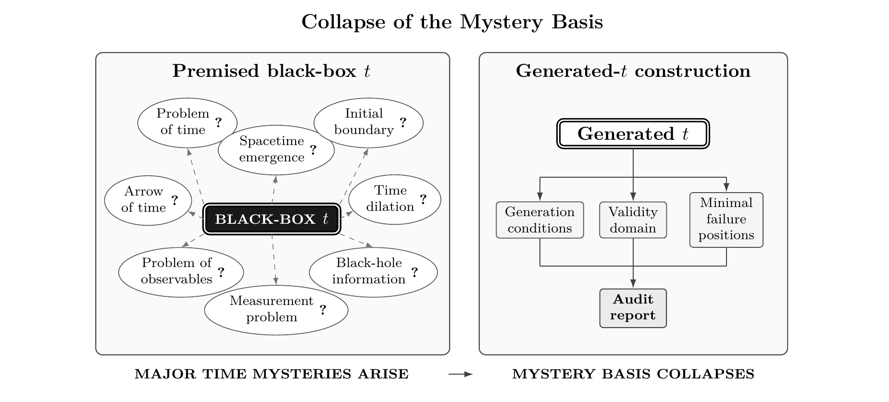

LCTR overview
Have the mysteries of time been solved?Time generation and the disappearance of mysteries in LCTR
The local-comparison theory of time reference (LCTR) generates the time used in physical laws from nontemporal physical inputs. By establishing the conditions under which time is constituted and the positions at which those conditions fail, it removes the basis of mysteries that depend on ungenerated time.


Time: from a premise of law to a consequence of generation
Successful calculation with a physical law and the physical establishment of the time used in that calculation are distinct matters. LCTR requires the construction of time content and its physical grounds before a time variable is introduced into a law.
A constructive definition of time: answering Feynman’s question
In Section 5–2 of Volume I of The Feynman Lectures on Physics, Feynman uses “we,” including himself, to say that time probably cannot be defined in the dictionary sense. He then shifts the discussion from defining time to measuring it.
LCTR gives a constructive definition of physical time through its conditions of establishment. Starting from nontemporal physical inputs, it successively establishes the identity of time content, before-and-after relations, comparability and incomparability, linear order, and real-valued representation. These constructions specify the conditions under which the time used in physical laws is established.
Computer-science design principles as a mathematical structure for physical time
LCTR integrates the design principles of computer science concerning types, dependencies, states, and change effects as a mathematical structure that specifies the generation of physical time, qualification for use, invalidation localization, and downstream regeneration.
The audit identifies the first failed conditions along generation dependencies and the downstream results reached by those failures. It thereby connects the conditions for using a time representation to the objects that must be regenerated or recomputed after repair.
Two-stage misrecognition in time stretching, and a third stage in biological application
- First stage: time whose physical grounds have not been generated is placed in advance of laws as “time itself,” independent of clocks, oscillators, signals, records, and other physical carriers.
- Second stage: comparison differences on physical carriers responding to gravity or motion are attributed to stretching of that “time itself.”
- Third stage, involving biological application: the time attribute is transferred to living processes, and the force of experimental results concerning physical carriers is extended to direct demonstration of living processes.
Differences in clock indications or rates, the stretching or contraction of “time itself” independently of physical carriers, and changes in biological processes are claims about different targets. Connecting experimental findings about clocks to an account of aging requires identifying the physical relations supporting that connection and the scope directly supported by the evidence. LCTR audits each stage at which the target of explanation shifts from clocks to time itself and then to biological processes.
The statements “time does not exist” and “time itself stretches or contracts” also require their targets to be identified. If they concern the same time content and application domain, they are incompatible. If they concern different targets, the referent of “time” and the switch between referents must be made explicit.
Auditing the unbounded inheritance of limited results through evidence-effect domains
LCTR identifies a recurring pattern across multiple fields: the success of a limited computation, prediction, model fit, or experiment is transferred to the physical establishment of an entire mathematical expression, the qualification of ungenerated time, application to an unmeasured target, or an ontological claim about time. It calls this pattern the unbounded inheritance of limited results.
An evidence-effect domain is the scope directly supported by successful measurement, prediction, model fitting, or computation. The force of a result is restricted to the object, predicate, evidence type, condition of establishment, and application domain that it directly supports. LCTR audits claims that transfer that result beyond this domain.
Generating time eliminates mysteries that depend on ungenerated time
The construction begins by retaining apparatus indications and differences in object states as records, and by determining where the information needed for comparison is joined, without using temporal quantities. LCTR then successively gives the conditions for the identity of time content, before-and-after relations, comparability and incomparability, linear order, and real-valued time representation. Through this construction, LCTR defines physical time in terms of its conditions of establishment.
When the materials or relations required for the construction are absent, or a generation condition fails, the time representation dependent on that condition is not established. LCTR identifies this failure in terms of what is missing and which conditions fail first.
Through this generation, mysteries whose constitutive conditions depend on ungenerated time lose their grounds as independent problems and disappear. The subsequent tasks are to determine the conditions under which time representations are established, their domains of use, failure positions, the order of repair, and the evidence to be acquired next.
An operational guarantee for continuity and differentiation
LCTR gives the continuous approximations and differential forms used in physical models an operational guarantee with explicit conditions of use and reasons for failure. Along the dependencies of time generation, it establishes the domains and scales in which they can be used and the positions at which their conditions first fail.
When predictions from a differential equation disagree with observations or experiments, the conditions supporting the time representation, continuous approximation, and differential form used by that equation also need to be examined. LCTR makes these conditions explicit audit targets and distinguishes their validity domains, failure positions and reasons, and points at which insufficient evidence prevents a judgment.
The audit identifies the conditions requiring repair and the objects that must be regenerated or recomputed after repair. When the applicability limits of continuous approximations and differential forms are encountered, the causes can therefore be investigated and repairs carried out through a procedure grounded in conditions, evidence, and dependencies.
The arrow of time and the problem of time in quantum gravity
LCTR reformulates the problem of time in quantum gravity as a problem of qualification for using time in physical laws. It specifies the arrow of time as a subsequent condition that gives an orientation to generated time representations. It also connects temporal descriptions concerning cosmological initial boundaries, black-hole information, observables, quantum measurement records, and spacetime emergence to the generation conditions and validity domains of the time content they use.
Re-grounding while preserving existing results
LCTR preserves existing mathematical, experimental, and engineering results within the scope supported by their evidence. It then generates time content and its grounds and audits validity domains and failure positions to determine the domains in which those results can be safely reused.
When primitive-time input backgrounds required conditions, and independent evidence establishes both their actual failure and dependency reach to a downstream result, that result itself loses qualification for use in the corresponding evaluation domain. Regeneration or recomputation is required after repair.
Auditing 72 sources by the same criterion
LCTR calls the use of time content in physical-law operations or result derivations “primitive-time input” when that content lacks a complete generation path from nontemporal physical inputs.
Using this criterion, the paper audits 72 representative sources spanning theories, experiments, metrological standards, and engineering from antiquity to the present. Primitive-time input remains in all 72. None generates all of the time content it uses from nontemporal physical inputs.